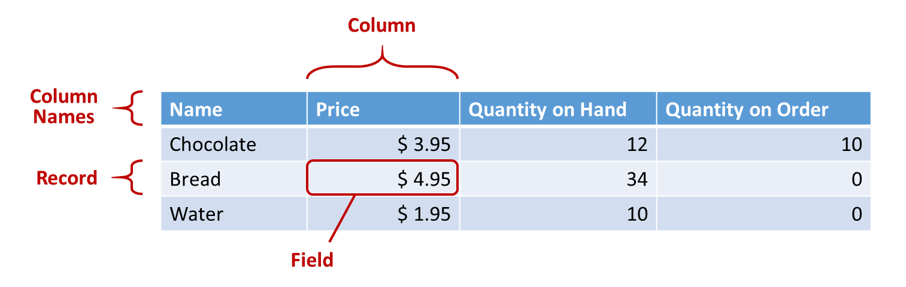

Databases zijn georganiseerde verzamelingen van gegevens die worden opgeslagen op een computer of ander elektronisch aparaat. Ze zijn ontworpen om gegevens makkelijk en overzichtelijk te bewaren. Dit zijn belangrijke kenmerken van databases:
- Gegevensstructuur: Databases gebruiken een gegevensstructuur om informatie in op
slaan. Dit zijn tabelen, records en vellen. Een tabel vertegenwoordigt een specifieke
entiteit (bv. klanten of producten), elk record in de tabel is een individuele eenheid
van die entiteit en velden bevatten de specifieke gegevens zoals namen.

- DBMS (Database Management System): Een DBMS is een software die wordt gebruikt om databases te maken, onderhouden en beheren. Ze hebben functies voor gegevensopslag, bewerken en beveiligen. Populaire DBMS-systemen zijn bijvoorbeeld Microsoft en Oracle Database.
- Querytaal: Databases kunnen worden veranders en gemanipuleerd door middel van querytalen. Voor rationele databses wordt meestal SQL (Structured Query Language) gebruikt. Hiermee kunnen gebruikers gegevens opvragen, bijwerken en verwijderen.
- Indexering: Databases gebruiken indezen om de werking van gegevensopvragingen te verbeteren. Indexen zijn geoptimaliseerde gegevensstructuren die snel toegang geven aan specifieke gegevens. Je kunt het vergelijken met de inhoudsopgave van een boek.
- Transactiebeheer: Bij zakelijke toepassingen moeten databases meestal meerde transacties
tegelijk kunnen verwerken. Transactiebeheer zorgt ervoor dat transacties betrouwbaar worden
uitgevoerd. Ook als er meerdere tegelijk plaatsvinden.

- Beveiliging: databases moeten worden beschermd tegen ongeautoriseerde toegang en gegevensverlies. Beveiligingsmechanisme zorgen hiervoor.
Als u geintreseerd bent in een nog verdere uitleg over databases, bevindt zich hieronder een video:Video courtesy of Databases.